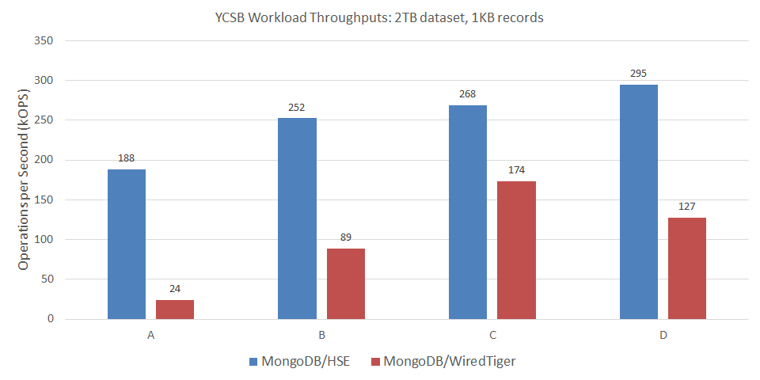
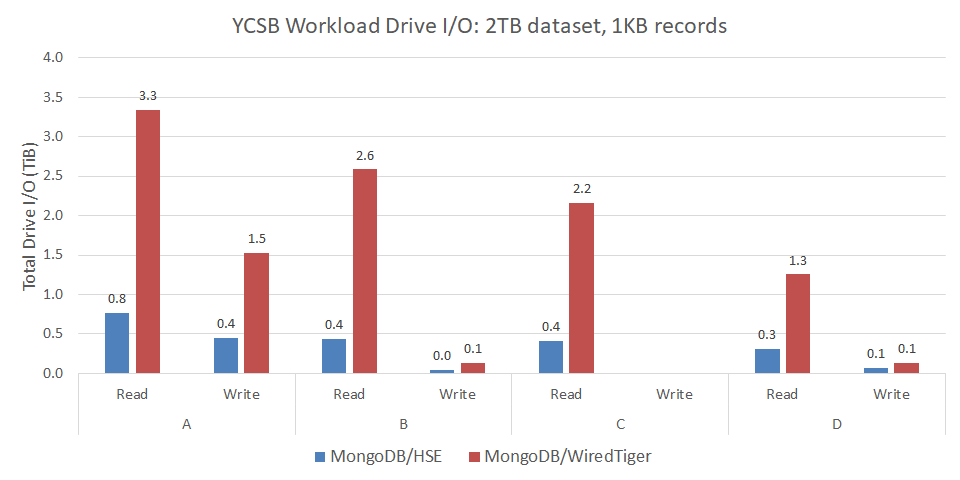

MongoDB
MongoDB® is a popular document-oriented NoSQL database. The MongoDB implementation is open source, and includes an extensible framework for integrating different storage engines.
We integrated HSE with MongoDB 3.4.17 to validate its benefits within a
real-world storage application.
The hse-mongo repo is a fork of
MongoDB that adds support for HSE.
MongoDB with HSE (MongoDB/HSE) demonstrates significantly increased
performance and scalability for many workloads when storing data on SSDs.
In the sections that follow, the reader is assumed to be familiar with configuring and running MongoDB. The information provided here is specific to using MongoDB with HSE.
Install HSE and Create a KVDB
Review the getting started section of this documentation. Then, following those instructions and examples, start by
- Installing HSE and mpool from packages or source
- Configuring an mpool for HSE storage with appropriate permissions
- Creating an HSE KVDB in that mpool to store the MongoDB data
In the mongod.conf example below, we assume the name of the mpool
is mongoData, which is also the name of the KVDB.
Install MongoDB Dependencies
Install dependencies for your platform.
$ sudo dnf install python2-pip gcc-toolset-9 libuuid-devel lz4 lz4-devel openssl-devel openssl-devel numactl libpcap libpcap-devel golang-1.11.13 createrepo rpmdevtools
$ sudo alternatives --set python /usr/bin/python2
$ pip2 install --user scons
$ sudo apt-get install debhelper rpm golang libpcap-dev
$ sudo yum install devtoolset-9 rh-mongodb32-scons.noarch scl-utils libuuid-devel lz4 lz4-devel openssl-devel numactl libpcap libpcap-devel golang-1.9.4 python36 createrepo rpmdevtools
Install MongoDB with HSE from Packages
MongoDB/HSE can be installed from release packages.
Download and install the latest hse-mongo
packages for your platform.
Package names start with hse-mongodb-*A.B.C.D.E-X.Y.Z, where
A.B.Cis the MongoDB version (e.g.,3.4.17)D.Eis our MongoDB integration versionX.Y.Zis the minimum HSE release version required
Tip
An example of a specific prefix is hse-mongodb-server-3.4.17.2.1-1.8.0.
Install the packages for your platform as follows.
$ sudo dnf install ./hse-mongodb-server-A.B.C.D.E-X.Y.Z*.rpm
$ sudo dnf install ./hse-mongodb-mongos-A.B.C.D.E-X.Y.Z*.rpm
$ sudo dnf install ./hse-mongodb-shell-A.B.C.D.E-X.Y.Z*.rpm
$ sudo dnf install ./hse-mongodb-tools-A.B.C.D.E-X.Y.Z*.rpm
$ sudo apt-get install ./hse-mongodb-server_A.B.C.D.E-X.Y.Z*.deb
$ sudo apt-get install ./hse-mongodb-mongos_A.B.C.D.E-X.Y.Z*.deb
$ sudo apt-get install ./hse-mongodb-shell_A.B.C.D.E-X.Y.Z*.deb
$ sudo apt-get install ./hse-mongodb-tools_A.B.C.D.E-X.Y.Z*.deb
$ sudo yum install ./hse-mongodb-server-A.B.C.D.E-X.Y.Z*.rpm
$ sudo yum install ./hse-mongodb-mongos-A.B.C.D.E-X.Y.Z*.rpm
$ sudo yum install ./hse-mongodb-shell-A.B.C.D.E-X.Y.Z*.rpm
$ sudo yum install ./hse-mongodb-tools-A.B.C.D.E-X.Y.Z*.rpm
Install MongoDB with HSE from Source
MongoDB/HSE can also be built and installed from source.
Clone the latest release tag from the hse-mongo
repo.
Releases are named rA.B.C.D.E-hse-X.Y.Z where
A.B.Cis the MongoDB version (e.g.,3.4.17)D.Eis our MongoDB integration versionX.Y.Zis the minimum HSE release version required
Tip
An example of a specific release tag is r3.4.17.2.1-hse-1.8.0.
For example
$ git clone https://github.com/hse-project/hse-mongo.git
$ cd hse-mongo
$ git checkout rA.B.C.D.E-hse-X.Y.Z
Build and install MongoDB/HSE for your platform as follows.
Note
For r3.4.17.2.0-hse-1.7.1 see the build instructions in the
release notes.
$ hse-packaging/build.py --clean
$ find /tmp/$(id -un)/pkgbuild/repo/ -name hse-mongo*.rpm
$ hse-packaging/build.py --clean
$ find /tmp/$(id -un)/pkgbuild/repo/ -name hse-mongo*.deb
$ hse-packaging/build.py --clean
$ find /tmp/$(id -un)/pkgbuild/repo/ -name hse-mongo*.rpm
New MongoDB Options
MongoDB with HSE adds the following command-line options to
mongod, which are reflected in mongod --help.
--hseMpoolNameis the name of the mpool (KVDB) storing the MongoDB data; default ismp1--hseParamsis a string of semi-colon separated HSE parameters; e.g.,"kvdb.dur_intvl_ms=1000;kvdb.log_lvl=6"--hseConfigPathis the path to an HSE configuration file--hseCollectionCompressionis the compression algorithm applied (lz4ornone); default islz4--hseCollectionCompressionMinBytesis the min document size (bytes) to compress; default is0
These same HSE options are also supported in mongod.conf, in addition
to the standard storage configuration options.
# Standard options
storage:
dbPath: /var/lib/mongo
journal:
enabled: true
commitIntervalMs: 100
# Use Heterogeneous-memory Storage Engine (HSE). This is the default.
# Specify the mpool (KVDB) for storing data. Default is "mp1".
engine: hse
hse:
mpoolName: mongoData
# Uncomment to disable or customize compression for HSE.
# Allowable compression types are "lz4" or "none". Default is "lz4".
# collectionCompression: none
# collectionCompressionMinBytes: 0
# Uncomment and edit to use an HSE configuration file.
# configPath: <path to HSE config file>
# HSE parameters for tuning, support, or debug
# params:
# Recommended oplog size for HSE when using replica sets.
replication:
oplogSizeMB: 32000
replSetName: rs1
# Recommended query and other parameters for HSE
setParameter:
internalQueryExecYieldIterations: 100000
internalQueryExecYieldPeriodMS: 1000
replWriterThreadCount: 64
Options specified in hse.params or --hseParams take precedence over those
specified in an HSE configuration file specified via
hse.configPath or --hseConfigPath.
Note
Use the MongoDB hse.collectionCompression or --hseCollectionCompression
option to specify value compression, not the native
HSE kvs.value_compression parameter.
Run MongoDB with HSE
Start and manage mongod as you would normally.
The owner (UID) and group owner (GID) of the mpool that mongod will use
to store data should match the user account running mongod.
If mongod was installed from packages, which is normally the case,
you should use the mongod user account.
See the release notes for any limitations or known issues for a particular release of MongoDB/HSE.
YCSB Performance Results
Below are results from running YCSB with MongoDB/HSE. For comparison, we include results from running YCSB with MongoDB 4.2.4 using the default WiredTiger storage engine (MongoDB/WiredTiger).
Info
MongoDB 4.2.4 was the latest version available at the time we conducted this performance study, which is why we selected it for comparison. We assume there have been performance improvements made since MongoDB 3.4.17, and that integrating HSE with MongoDB 4.2.4 would likely produce even better MongoDB/HSE results than those shown below.
Server configuration for each member of a 3-node replica set:
- 2-socket Intel® Xeon® CPU E5-2690 v4
- 256GB DRAM
- 4x Micron® 9300 NVMe SSDs 3.2TB in an LVM striped logical volume
- RHEL 8.1
- MongoDB 3.4.17 with HSE 1.7.0 (MongoDB/HSE)
- MongoDB 4.2.4 with WiredTiger (MongoDB/WiredTiger)
YCSB benchmark configuration:
- 2TB dataset consisting of 2-billion 1,000-byte records
- 96 client threads
- 2 billion operations per workload
- YCSB 0.17.0
For MongoDB/HSE, we specified the HSE configuration file
/opt/hse/config/mongodb_ycsb.yml that is installed with HSE.
We also followed all recommended mongod.conf settings for HSE from
the example above.
The following table summarizes the YCSB workloads presented here. The application examples come from the YCSB documentation.
| YCSB Workload | Operations | Application Example |
|---|---|---|
| A | 50% Read; 50% Update | Session store recording user-session activity |
| B | 95% Read; 5% Update | Photo tagging |
| C | 100% Read | User profile cache |
| D | 95% Read; 5% Insert | User status updates |
Load Phase
YCSB starts by populating the dataset (database) to the size specified. This is a 100% Insert workload. Load phase statistics are presented in the following table. For this workload, MongoDB/HSE delivered more than 6x the throughput compared to MongoDB/WiredTiger — reducing total duration by 84%.
| Load Metric | MongoDB/HSE | MongoDB/WiredTiger |
|---|---|---|
| Duration (minutes) | 208 | 1,307 |
| Inserts / second | 159,996 | 25,512 |
| Insert 99.9% latency (ms) | 2.7 | 350.7 |
Run Phase
Run phase throughputs for MongoDB/HSE and MongoDB/WiredTiger are shown in the following chart. For these YCSB workloads, MongoDB/HSE delivered up to nearly 8x more throughput than MongoDB/WiredTiger.

In delivering high throughput, MongoDB/HSE also demonstrated good 99.9% tail latency, as shown below. For these YCSB workloads, MongoDB/HSE reduced read tail latency up to 98%, and write (insert or update) tail latency by as much as 96%.

Finally, we measured the amount of data written to and read from the drives on the primary cluster node in the course of executing each workload. Reducing writes is important for SSDs because it translates to increased endurance. Reducing both writes and reads is important for networked storage to reduce load on the fabric.
The following chart shows the total bytes of data written to or read from the drives during workload execution. For these YCSB workloads, MongoDB/HSE reduced bytes read up to 83%, and bytes written by as much as 71%.
